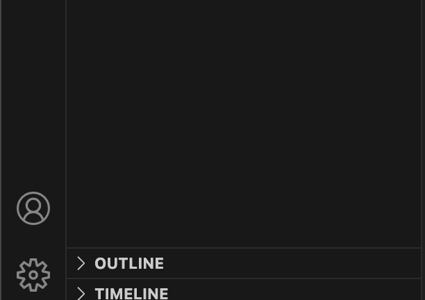
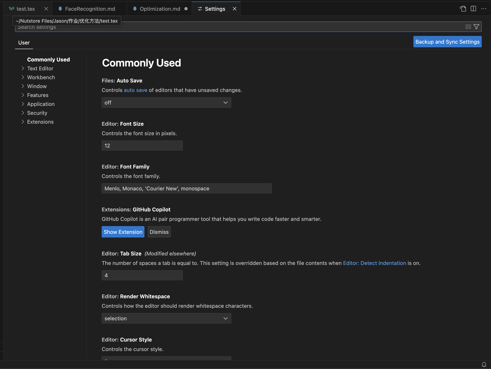
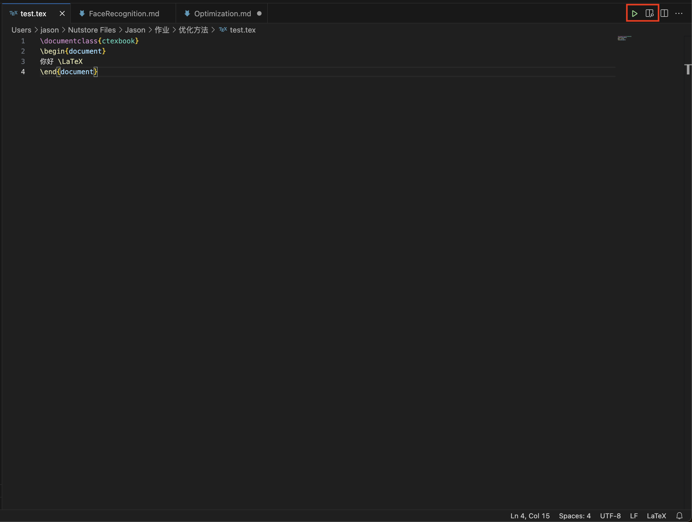

Optimization
Use LaTex with VS Code in Mac M3
I want to use LaTex with VS Code on my Mac and there are configuration process.
First, we nned to download Texlive. In Mac OS, MacTex is designed by Latex to better fit Mac OS. So I downloaded MacTex. Since if we download it from the official website, it will be slow, so we can use domestic mirror to acclerate download.
After we download MacTex, click the Gear in the bottom left And then click setting and we will get this: After that, we click
Open Setting(json) on the top right and we will get an empty json file, we paste following codes in it:
{
// “latex.linter.enabled”: false,
“latex-workshop.latex.autoBuild.run”: “never”,
“latex-workshop.showContextMenu”: true,
“latex-workshop.intellisense.package.enabled”: true,
“latex-workshop.message.error.show”: false,
“latex-workshop.message.warning.show”: false,
“latex-workshop.latex.tools”: [
{
“name”: “xelatex”,
“command”: “xelatex”,
“args”: [
“-synctex=1”,
“-interaction=nonstopmode”,
“-file-line-error”,
“%DOCFILE%”
]
},
{
“name”: “pdflatex”,
“command”: “pdflatex”,
“args”: [
“-synctex=1”,
“-interaction=nonstopmode”,
“-file-line-error”,
“%DOCFILE%”
]
},
{
“name”: “latexmk”,
“command”: “latexmk”,
“args”: [
“-synctex=1”,
“-interaction=nonstopmode”,
“-file-line-error”,
“-pdf”,
“-outdir=%OUTDIR%”,
“%DOCFILE%”
]
},
{
“name”: “bibtex”,
“command”: “bibtex”,
“args”: [
“%DOCFILE%”
]
}
],
“latex-workshop.latex.recipes”: [
{
“name”: “XeLaTeX”,
“tools”: [
“xelatex”
]
},
{
“name”: “PDFLaTeX”,
“tools”: [
“pdflatex”
]
},
{
“name”: “BibTeX”,
“tools”: [
“bibtex”
]
},
{
“name”: “LaTeXmk”,
“tools”: [
“latexmk”
]
},
{
“name”: “xelatex -> bibtex -> xelatex2”,
“tools”: [
“xelatex”,
“bibtex”,
“xelatex”,
“xelatex”
]
},
{
“name”: “pdflatex -> bibtex -> pdflatex2”,
“tools”: [
“pdflatex”,
“bibtex”,
“pdflatex”,
“pdflatex”
]
},
],
“latex-workshop.latex.clean.fileTypes”: [
“.aux”,
“.bbl”,
“.blg”,
“.idx”,
“.ind”,
“.lof”,
“.lot”,
“.out”,
“.toc”,
“.acn”,
“.acr”,
“.alg”,
“.glg”,
“.glo”,
“.gls”,
“.ist”,
“.fls”,
“.log”,
“*.fdb_latexmk”
],
“latex-workshop.latex.autoClean.run”: “onFailed”,
“latex-workshop.latex.recipe.default”: “lastUsed”,
“latex-workshop.view.pdf.internal.synctex.keybinding”: “double-click”,
“editor.unicodeHighlight.allowedLocales”: {
“zh-hans”: true,
“zh-hant”: true
},
“[latex]”:
{
"editor.defaultFormatter": "James-Yu.latex-workshop"
}
}
Then we open our prepared .tex file and click the bottons from left to rigth and we will see the output pdf of out .tex file
The relevant HW and notes can be seen at my Github repo: Optimization
Reference:
[1] 胖虎有话说 Mac系统下VScode+LaTeX配置方案（干货版）https://zhuanlan.zhihu.com/p/654720622#:~:text=%E9%80%9A%E8%BF%87%E5%AE%89%E8%A3%85%E7%AC%AC%E4%B8%89%E6%96%B9%E6%89%A9
[2] Hi7bet Mac-LaTeX-VS Code从门外到入门(持续更新) https://zhuanlan.zhihu.com/p/648578326#:~:text=%E6%88%91%E4%BB%AC%E4%BD%BF%E7%94%A8VS%20C